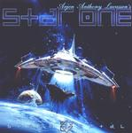

| Artist: | Star One |
| Title: | Space Metal |
| Label: | Inside Out IOMCD099/6 93723 65042 5 |
| Length(s): | 56 minutes |
| Year(s) of release: | 2002 |
| Month of review: | [09/2002] |
| 1) | Lift-off | 1.13 |
| 2) | Set Your Controls | 6.01 |
| 3) | High Moon | 5.36 |
| 4) | Songs Of The Ocean | 5.23 |
| 5) | Master Of Darkness | 5.14 |
| 6) | The Eye Of Ra | 7.34 |
| 7) | Sandrider | 5.31 |
| 8) | Perfect Survivor | 4.46 |
| 9) | Intergalactic Space Crusaders | 5.22 |
| 10) | Starchild | 9.04 |
Disc 2:
| 1) | Hawkwind Medley | 9.46 |
| 2) | Spaced Out | 4.53 |
| 3) | Inseparable Enemies | 4.15 |
| 5) | Starchild (remix) | 9.31 |
| 6) | Spaced Out (alternate Version) | 4.55 |
| 7) | Shit 'n' Pee (bonus Track) |
This album as you can see is not released on the Transmission label, but on Inside Out.
With High Moon we stay in the metal regions, in fact I was promised that this would be a very metal oriented album, and we do with this plodding heavy track. Again the rhythm guitars saw away, but let's not forget the terrific vocal performances and vocal melodies here and the strong synth presence. I especially like the part Damian (the bridge/chorus) and Floor (the title) sing, especially with the Arabic influence, and the way Allen sings the backing to Damian. The verses are a bit flat.
With submarine tones we move into Songs Of The Ocean. In the outset this is a rather friendly song with acoustic guitar. Swanö has a rather flat voice, in this song rich in organ. The contrast with Floor's clearly ringing voice (she more or less takes the role of Lana Lane). Although the band does not try to be progressive by the inclusion of many breaks, the music is not plainly metal or even melodic metal: there is simply too much melodic and vocal variation. As a result, all the songs become short epics of a kind. And the choruses are all so catchy, no melody is taken for granted, which is probably why I like this so much. In this song, this is the part where Damian sings ``We shape light, we travel space, but we don't know the words to the songs of the ocean''.
Master Of Darkness is not dissimilar from the previous songs with the catchy combination of the vocals of the people involved and some over the top synth solos (by Norlander I would think) and gurgling Hammond. The second solo, played against the, guitar of Gary Wehrkamp is a fast and more fiddly one. A rather aggressive piece this at times.
The Eye Of Ra is a particularly good track (I wish I could say the same for the movie that it is about): the hammond roars and grumbles, the vocal parts are all rather slow. Especially when I hear Damian sing I am reminded of the mysterious And The Druids Turn To Stone, until the power goes up. But this is only introduction. In the song itself, Allen sings his muscled verses with Floor singing the title (as it seems she is often limited to). The guitar lines are quite tense on this track, in fact a lot of attention is given to give the music both a Middle Eastern feel and bringing tension into the music, instead of raging on. One of the highpoints of the album still comes with the euphoric choir vocal, with Floor ringing out over the others.
Sandrider is a droning rock track with Swanö sinister vocals dominating. The other vocalists are limited to singing the chorus, while the drums pound on. Perfect Survivor is another high energy rock pill with plenty fo spacy keyboards and an extensive instrumental section for rhythmic variation and meandering guitar solos. On the other hand, the vocal part is rather bouncy and slow.
Intergalactic Space Crusaders is another one of my favourites with its organ riddled powerfully rocking opening. Damian and Allen take the lead here alternatedly, the one speaking for himself, the other speaking to help others. Johansson throws out another solo, and yes Norlander as well on another bombastic track.
Starchild is the longish concluding track, and quite an epic one. It contains all the ingredients of the previous ones, with also quite a bit of acoustic guitar, but without ever becoming very fast. The song does include some good guitar solos. Swanö sets part of the tone of the song with his somber vocals (you might compare him to the guy from Tiamat on The dream Sequencer). Especially Allen shows the back of his tongue on this one with some powerful and emotional outbursts.
My thoughts on the second disc were added later after I got a copy of it from Arjen Lucassen. Here goes. On the Hawkwind Medley we can hear Dave Brock assisting the band in delivering a healthy slab of space rock. Brock never performs outside his known circle of Hawkfriends, so this is quite an event. I could of course pretend to know a lot of Hawkwind by writing down what titles this song is composed of, but you are bound to found out that the titles are given in the booklet. Anyway, this is a near ten minutes of rather straightforward heavy space rock with organ abrim, fast paced, with rhythm guitars grinding out the riffs. Especially the middle part leading up to Assault And Battery is great with some atmosphere, good melodies and if I am not mistaken some of Lucassens own material in there. Or is that still part of Brainstorm? The song ends in a moody fashion with some typical guitar linings in the style of Lucassen. This almost Morricone type stuff.
Spaced Out is one of the leftovers from the Space Metal sessions. This is a rather straightforward metal rocker, not high in my book. I am not surprised it was left out. The energy is there of course. The Computer/Bomb interlude is quite different again, but I would not call it beautiful. Allen got the best vocal melody to work with, as is shown by the part following the interlude. The song ends in chaotic fashion with flashy keyboard solo's and shouted phrases.
Inspired by Enemy Mine, Inseparable Enemies opesn less forcefully. We are in organ territory here. The theme dominating the opening sounds good, way better than Spaced Out. However, I find the song a bit lacking in the melody of the chorus, sung by Wilson. Floor has a nice part to sing, though, lined by overbrimming organ. After a gurgling guitar solo, Damian is back.
On Bowie's Space Oddity we hear Lucassen himself. His vocals are different from those of Bowie, especially around the part where he talks of his wife. One might say with Lucassen's love of everything in space (I wonder what he would do if he had enough money to buy a trip outside the atmosphere?) this ought to be an anthem for him.
The song has certainly gotten a Lucassen varnish with some occasional heavy guitars and some very cosmic keyboards. A nice view, but the original is still preferred (but I doubt that improving it was the objective).
Starchild is a so called Dolby Pro-Logic mix (whatever that may be). It also seems to have some cosmic keyboards in its opening making the song a tad longer. We also get an alternate version of Spaced Out here with Robert Soeterbroek and Damian Wilson singing Allen's and Swanö's lead parts.
I leave the acoustic hilarious, Shit 'n' Pee for the reader to find out about by himself. It does show Arjen from a very different side.
The extensive artwork is by Mattias Noren, although the magnificent outside picture was made by someone else. Mattias made a small picture for each of the songs.